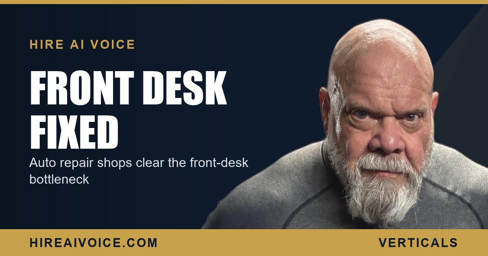

Auto Repair Shops: Fixing the Front-Desk Bottleneck

The Short Version
- Most auto repair shops run the front desk with one person juggling the counter, the phones, and the customers all at once.
- During the morning rush, calls land faster than anyone can answer them, so they roll to voicemail or ring out unheard.
- A driver shopping a quote will not wait. They hang up and call the next shop, and you never knew the job existed.
- A 24/7 AI voice agent answers every call, gives basic info, books drop-offs and appointments, and captures every quote request.
- It does not replace your service writer. It removes the bottleneck so your front desk stops drowning.
Why Does the Auto Shop Phone Always Go Unanswered?
Because one person is running the entire front desk. That same service writer is checking in the customer at the counter, writing up the order, walking back to talk to the tech, and chasing a part on the phone with the supplier. Then the customer line rings, and rings again, and there is simply no hand free to pick it up. This is the auto repair front-desk bottleneck, and almost every independent shop in Santa Clarita or Los Angeles County has it.
The phone is not a side task. For a repair shop it is the front door. Every unanswered call is a customer standing on your doorstep, knocking, getting no answer, and walking away to the shop down the street. You would never let that happen at the counter. It happens on the phone all day.
When Does the Shop Lose the Most Calls?
The morning rush. Between the first drop-offs and the wave of people calling on their way to work, several calls hit at once during the exact window when your one front-desk person is busiest writing up the cars already in the bay. That is when the most calls go to voicemail, and that is when the highest-intent callers are dialing, the ones who need their car looked at today.
Think about who is calling at 8:15 in the morning. Someone whose check-engine light came on, someone who heard a grinding noise on the freeway, someone whose AC died overnight. They are not casual. They want a number and an open slot, and they are calling down a list until somebody picks up.
What Happens When a Quote Shopper Gets No Answer?
They call the next shop. A driver pricing a brake job or a timing belt is not leaving a thoughtful voicemail and waiting for a callback. They have three or four shops pulled up and they dial straight down the list. The shop that answers first and gives them a number usually books the job, and it is often not about being the cheapest. It is about being the one who picked up.
You did not lose the job on price. You lost it on a phone nobody could reach.
That is the brutal part. The car needed work, the customer was ready to pay, and the job walked to a competitor because your one front-desk person was mid-write-up when the call came in. Multiply that across every busy morning, and the lost revenue dwarfs almost anything you spend on marketing. You already paid to make that phone ring. The leak is in answering it.
How Does an AI Voice Agent Fix the Bottleneck?
It answers every inbound call the instant it rings, 24 hours a day, no matter how slammed the counter is. The AI voice agent greets the caller by your shop name, gives the basic information, your hours, your location, the services you handle, and then does the work that actually books jobs. It schedules drop-offs and appointments straight into your calendar, and it captures every quote request with the vehicle, the job, and the customer's contact details.
This is exactly what an AI receptionist that never sleeps is built for. The 8:15 morning-rush call no longer rolls to voicemail while your writer is heads-down. It gets a warm, instant conversation and a booked slot, while the shop down the street is still letting the phone ring out.
Does This Replace My Service Writer?
No. It takes the phone off their back so they can do their actual job. Right now the phone is constantly pulling your service writer away from the customer standing right in front of them, which is bad for both. The AI agent handles the routine and overflow calls, books the easy drop-offs, and captures the quote requests, so your writer can give the person at the counter their full attention.
Think of it as a second set of hands that never gets overwhelmed. When two calls come in at once during the rush, the AI takes both. When a call comes in after hours, the AI books it. Your front desk stops being a bottleneck and starts being a funnel.
What Should an Auto Shop Do This Week?
You do not need to hire another body or spend more on ads. You need to stop leaking the calls you already get. Three moves:
1. Count the misses. For one week, track how many calls your shop actually answers live versus how many roll to voicemail during the morning rush. The number is your hidden revenue leak.
2. Put a 24/7 answer in place. An AI voice agent that picks up every call, gives basic info, and books the drop-off turns your busiest, worst-answered hours into booked work.
3. Capture every quote. Make sure no price-shopping caller hangs up into the void. Every quote request gets logged and followed up instead of walking to a competitor.
The shops winning in Santa Clarita and LA County are not the ones with the slickest waiting room. They are the ones who answer the phone every single time. Fix the front-desk bottleneck and you stop handing jobs to the shop down the street.
Answer Every Call During the Rush
Our AI voice agent answers every call 24/7, books the drop-off, captures the quote, and follows up automatically. Live in 72 hours. $297/month, no contracts. Or call Sarah, our live agent, and hear it yourself.